Otsuki, Kochi: things to do, food and stays
Otsuki · Kochi
Otsuki
Highlighted on the Kochi map.

Stay
大月エコロジーキャンプ場
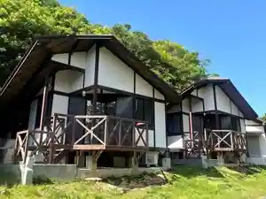
Otsuki Ekorojikyanpu Ba
大月アウトドアフィールドKASHINISHI
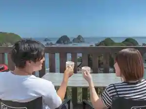
Otsuki Autodoafirudo KASHINISHI
柏島ヴィレッジ
Kashiwa Shima Virejji
Dining
魚ごころ
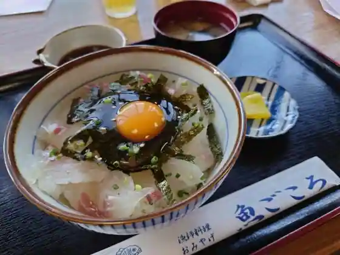
Sakana Gokoro
柏島ヴィレッジ Cafe Restaurant
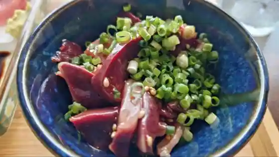
Kashiwa Shima Virejji Cafe Restaurant
道の駅大月 ふれあい市
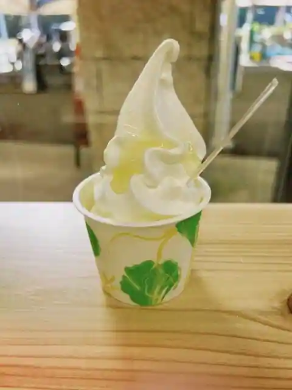
Michi No Eki Otsuki Fureai Shi
ホテルベルリーフ大月
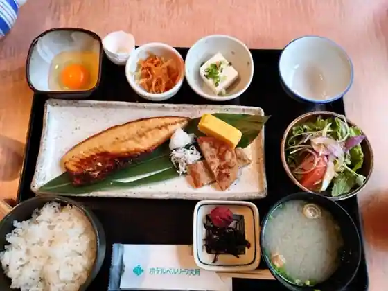
Hotel Berurifu Otsuki
お好みきみ
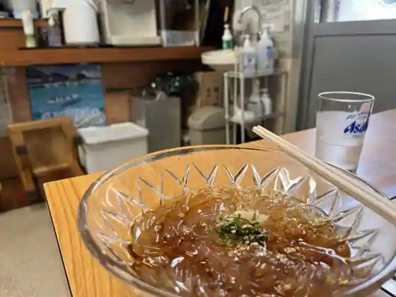
O Konomi Kimi
幡多郷
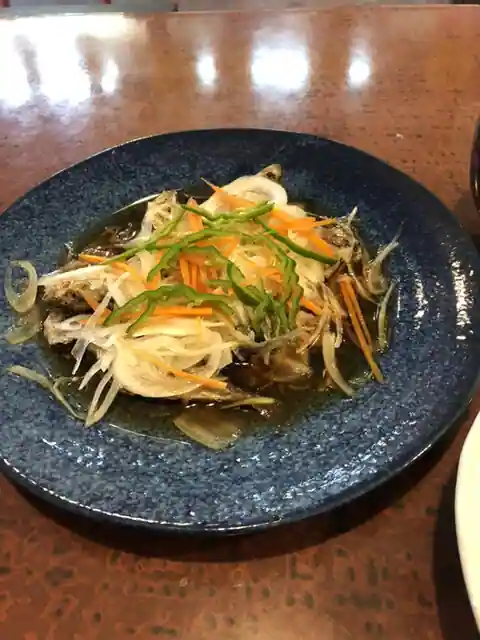
Hata Sato
土佐 力豚屋
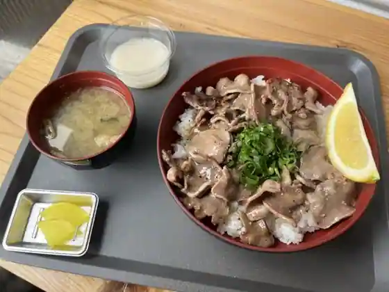
Tosa Chikara Buta Ya
美海屋
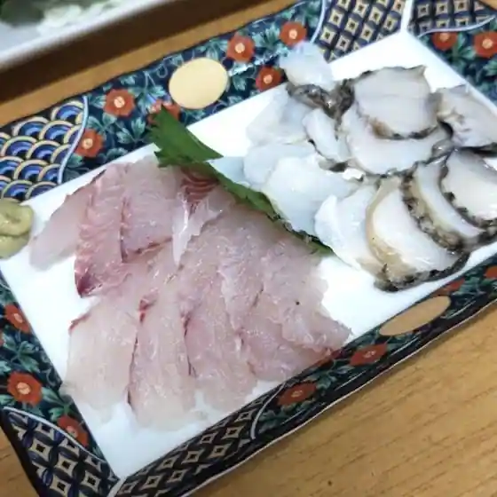
Mimi Ya
柏島旅館 山文
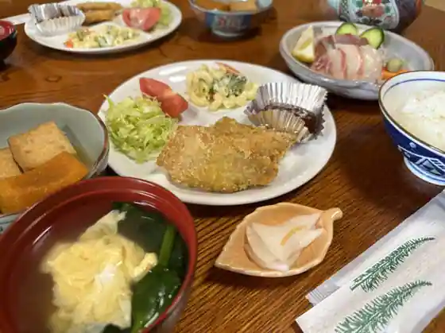
Kashiwa Shima Ryokan Yamabun
DiVING SERViCE うみほたる
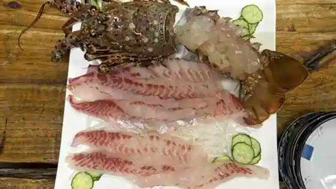
DiVING SERViCE Umihotaru
有田有為堂
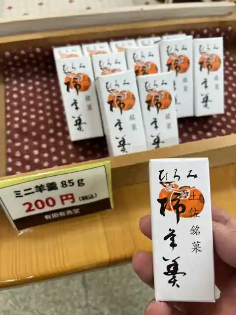
Arida Yui Do
谷鮮魚食堂
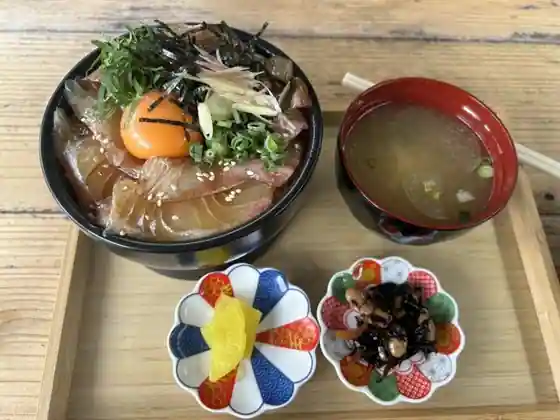
Tani Sengyo Shokudo
徳田旅館
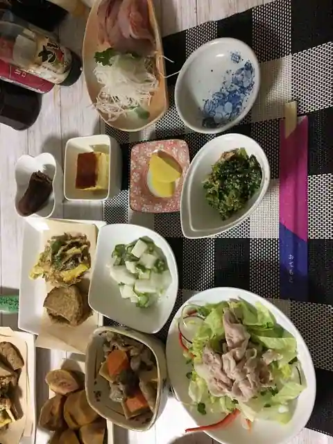
Tokuda Ryokan
なぎさ
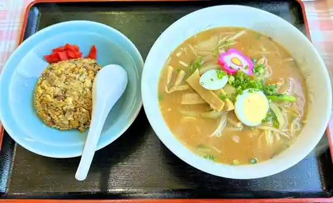
Nagisa
Cafe Bar 今日も
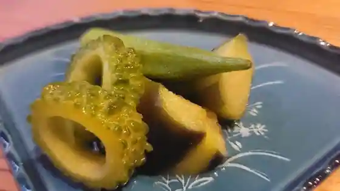
Cafe Bar Kyo Mo
カフェドパル
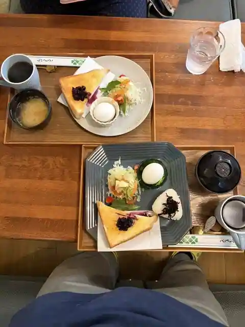
Cafe Doparu
福寿
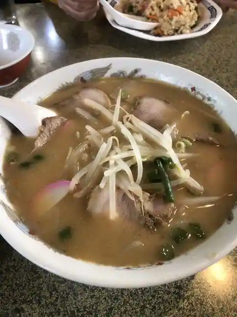
Fukuju
ぽえむ
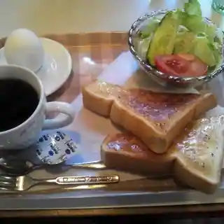
Poemu
３２１弁当
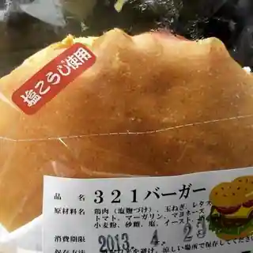
321 Bento
Sights
Kashiwa Shima
Kashiwa Shima Sekitei

Kashiwa Shima Kankojoho Hasshin Center

Odo Lookout

Roadside Station Otsuki

Ryugahama Campground